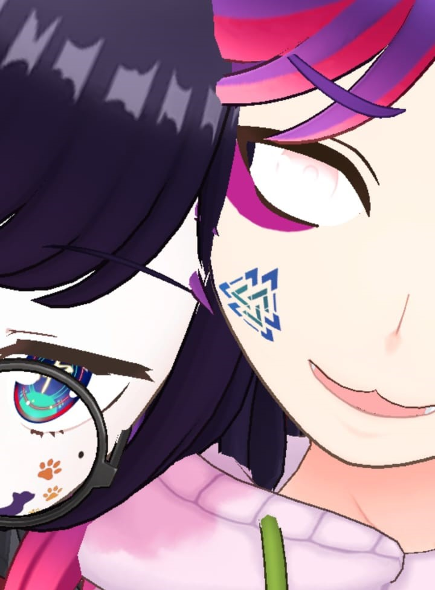

ME AND YOU

"Your hands dance across the keys, a melody flows, soft as a breeze"
"Your hands dance across the keys, a melody flows, soft as a breeze"
hello draketod
Aku cuma mau bilang makasih. Makasih buat waktu yang udah kamu luangin buat aku, buat semua obrolan, cerita, dan kebersamaan yang kita punya selama ini. Aku sadar kita nggak pernah punya status yang jelas, tapi itu nggak bikin aku kurang menghargai semua
yang udah terjadi di antara kita.
Aku suka saat kita bisa ketawa bareng, ngobrol panjang lebar, atau sekadar ada di momen yang sama tanpa perlu banyak bicara. Aku nyaman sama kamu, dan jujur, aku juga suka sama kamu. Mungkin
aku nggak pernah bilang langsung, atau kamu udah sadar tapi pura-pura nggak tahu. Aku nggak tahu ke depannya bakal gimana, tapi aku cuma mau kamu tahu kalau keberadaan kamu berarti buat aku.
Apa pun yang terjadi nanti, aku tetap berterima kasih karena kamu pernah jadi bagian dari hidup aku.